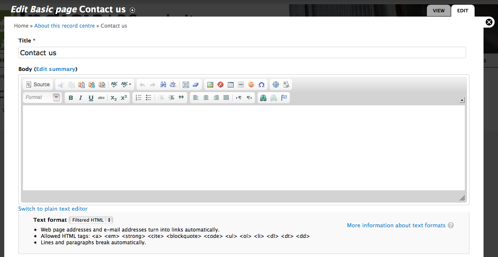

The LRC Drupal Template site has a menu structure prepared for you, with several blank pages for you to fill in. We’ll start by filling in the Contact us page from the About this record centre menu. The good news is Drupal has built in content editing features and, even better, the LRC Drupal Template already has modules installed to make text editing and formatting even easier.
Select About this record centre then Contact us from the main site menu. This takes you to the blank page provided by the template. Because we are logged in with content editing rights, there is a set of tabs at the top of the page with View and Edit options - these tabs are not shown on the page at all for users who cannot edit the page. Click the Edit tab to access the page editing facilities.
This is the standard Drupal page for editing content. Because we are editing a page (there are other content types), the main things we need to specify are the title and body. Try filling in some body text and experimenting with the formatting toolbar to see how it works.
At the bottom of the page, there are a number of sections for different aspects of the page. Some key ones to know about are:
As with many aspects of Drupal, there are lots of options here which can make things look a bit complex at first. However, the good news is that the Drupal community is a big and helpful place to be - there are lots of tutorials around and people willing to help with your questions. As an example, the nodes documentation has links to lots of useful information on the content editing process.